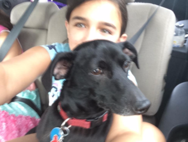
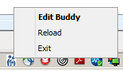

Walkthrough¶
This walk through will take about 1 ‘Uptown Funks’. So, that’d be about 4 minutes to learn the key macros. We’ll wait, if you’d like to cue up the music first.
Cheatsheet¶
First, print the cheatsheet in the docs folder.
Send to Buddy¶
Let’s try the buddy function. (My daughter Becca is buddies with Sparky.)
{kind=link}
When you first opened the macros, it should have asked you for a ‘Buddy’. If you need to change that, you can click on the tray icon and change. Enter the name like you would if you were addressing an update in CPS. So for me, CPS would autocomplete my assistant’s last name so I just put in her last name.
Next, grab a Post-it and in tiny letters write buddy over a corner with adhesive. Cut it out, and put it on the key (that’s above the ‘Return’ key on most keyboards. (Seriously, keyboard stickers help.)
Finally open an update.
Tap that key once and it Ends Update. If you tapped it again, it Holds Update.
Open up the update again, and ‘double tap’ it.
It should End Update
Remove any routing
Address it to your buddy and
Hold it to your buddy
Go back to Chart Desktop.
And it does that really fast.
CPOE Appends¶
A FCN, we use the CCC forms and we’ve standardized on a ‘CPOE append’ as our way of communicatiing. So, say you are in your inbox looking at labs. We use a workflow of ‘Append, Click Full Append, Find CPOE Append, Open It, Go to CPOE if you’re communicating about a problem.’
(Assuming you have CPOE forms, if you don’t skip this for now.)
You can try the CPOE key from different spots. If you’re in ‘Chart Desktop’, select a document to append and press the ‘C’ key on your keyboard. (Yes, you should go find that post-it that you used before and write in tiny letters, etc.)
It also works in ‘Chart’ when you’re reviewing Documents.
It also works in a Scanned Document. (Say you’re reading a consult and need to add a diagnosis to the patient’s problem list.)
I’m Done¶
Imagine for a second that someone is playing a piano.
My guess is that you saw a person with both hands on the keys. Not someone plinking out a single key with a single finger. Think of a person using a mouse. it’s a single finger. Click. Click. Click. Click.
This hotkey is a chord. Control-Spacebar. Most people internalize some of these hotkeys like ‘Control-B’ for Bold in Word or Outlook.
Open an update (say on a Fake Patient if you have those). Press Control-Space bar
Ends Update
Removes Routing
Closes
Takes you back to Chart Desktop.
The I’m Done Key (yes, get a Post-It, put it on your Spacebar) can be used in over a dozen locations. It helps you finish things quicker. Say you are enteriing a prescription and you’ve just entered the quantity. Your hands are on your keyboard so you type ‘Control-Spacebar’ and it clicks the OK button for you. Look at the cheatsheet for some of the places you can use it.